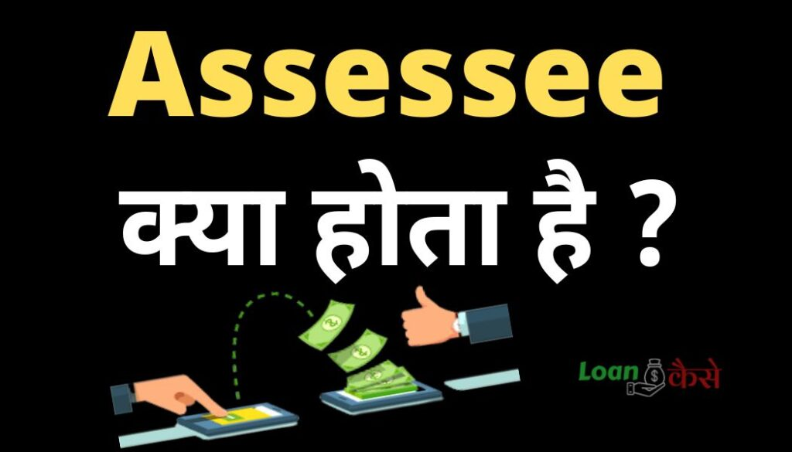

Assessee क्या होता है (Assessee meaning in Hindi) ?:-दोस्तों आज के इस पोस्ट में आप जानेंगे कि assessee क्या होता है ? Income-Tax Act,1961 के अनुसार Assessee कौन होते हैं ,और Assessee कितने प्रकार के होते हैं .
Income-Tax Act,1961 कहता है कि कोई भी व्यक्ति जिसने पिछले वित्तीय वर्ष में कोई Proffit (लाभ) Earn किया है या कोई Loss (नुकशान) किया है ऐसे Person को Assessee कहा जाता है ,सामान्य भाषा में समझे तो वो सभी व्यक्ति जो Income-Tax return filled करता है Assessee कहलाता है .
- Axis Bank Consolidated Charge क्या है?
- Bank से Loan लेने के लिए कैसे बात करें?
- how to avoid consolidated charges in axis bank
- Loan margin money क्या होता है?
- Lien Amount क्या है? (Lien amount meaning In Hindi)
- Epfo Balance Kasie check Karen-New Interest rate 8.1%
- New GST rates: जानिए आज से क्या हुई है सस्ती और क्या हुआ है महँगा?
Assessee कितने प्रकार के होते हैं (Types of assessee in income Tax)?
{kind=link}

Income-tax Act,1961 के अनुसार कुल तीन तरह के Assessee होते हैं :-
- Normal Assessee:– Normal Assessee वो Assessee हैं जिन्होंने पिछले वित्तीय वर्ष (फाइनेंसियल इयर ) में कोई कमाई किया है कोई घाटा हुआ है और अब उनको Income tax Return फाइल करना है इस तरह के Person को नोरमल Assessee कहते हैं . .
- Deemed Assessee:-ऐसे Person जो अपने Income के साथ साथ किसी अन्य के Income पर भी tax Pay करने के लिए Liable है उसे हम Deemed Assessee कहते है .उदाहरण के लिए हम बात करें तो छोटे छोटे बच्चे जिनके नाम से कोई business चल रहा हो तो ऐसे case में उनके Guardian उन बच्चो के Incometax भरते हैं इसे हम Deemed Assessee कहते हैं .
- Assessee in Default:-आईये अब बात करने हैं Assessee in Default की Assessee in Default वो Person होते हैं जिनको Income Tax के नियमों के अनुसार कुछ कार्य पूर्ण करने परते हैं या income Tax के नियम एवं शर्तों को पूरा करना पड़ता है लेकिन उन्होंने ऐसा नहीं किया तो उस फाइनेंसियल इयर का उस व्यक्ति को हम Assessee in Default कहते है
उदाहरण के लिए एक Employer की यह Deauty होती है कि वो अपने Employee के सैलरी में से कुछ पैसे income-tax के रूप में काटे और उस फाइनेंसियल इयर में जितने भी Income Tax Employer द्वारा काटे जाते हैं , वो सभी के सभी पैसे income-tax Department को जमा करे , लेकिन अगर वो employer ऐसा नहीं करता है इसे हम Assessee in Default कहते है
Pan of the assessee meaning In Hindi?
Assessee के मतलब ही कोई Person होता है तो कोई भी Person जो Income Tax के लिए Liable है उनका Pan Number (Permanent Account Number ) Pan ऑफ़ assessee कहलाता है .
Representative assessee meaning in Hindi?
18-वर्ष से कम आयु वाले ऐसे बच्चे जो Income tax जमा करने के लिए Liable हैं उनके अभिभावक (Guardian) बच्चो के जगह income tax filled करते हैं ऐसे case में बच्चो के अभिभावक Representative assessee कहलाते हैं .
Appointing representative assessee meaning in Hindi?
जब कोई नार्मल assessee अपने Income Tax से सम्केबंधित कार्यों को खुद से पूरा करने में असमर्थ होता है तो ऐसे case में उस नोरमल Assessee द्वारा एक person को Appoint किया जाता है इसे Appointing representative assessee कहा जाता है .
Triplicate for assessee meaning in Hindi?
किसी assessee के Incometax के रिलेटेड इनवॉइस जो उस assessee का अपना होता है Triplicate for assessee कहलाता है .
Conclusion (निष्कर्ष ):-
assessee का मतलब एक नार्मल tax Payer यानि की एक आम आदमी होता है ,assessee तीन प्रकार के होते हैं .